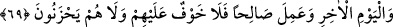

terbiyesinin neticeleridir.
“Kâfirler toplumu”, dînin sadece zahirine takılıp kalan, bunun dışında bir gaye
tanımayan inkâr ehlidir. İşin aslı böyle değildir. Çünkü her zâhirin bir bâtını vardır.
Mesnevî’de ne güzel söylenmiştir:
Her şeyin faydası içinde gizlidir,
İlaçta faydanın içinde gizli oluşu gibi.
İnkâra sevkeden ise hasettir. Nitekim hased yahûdi ve hristiyanları hakkı inkara
götürmüştür. Onun için nefsi haset gibi kötü sıfatlardan arındırmak gerekir.
Hikâye edilir ki, Fudayl b. İyâd’ın talebelerinden biri ölüm döşeğinde yatarken şeyhi
Fudayl yanına geldi, baş ucuna oturdu ve Yâsin sûresini okudu. Talebe: “Üstadım bunu
okuma” dedi ve sustu. Bunun üzerine şeyh, kelime-i tevhîdi telkin etti. Talebe ise: “Ben
bunu söylemem. Çünkü ben ondan uzağım”, dedi. Bu hal üzere de öldü.
Fudayl kırk gün evine kapandı ve ağladı. Bir gece rüyâsında vefât eden o talebesinin
cehenneme sürüklendiğini gördü. Ona: “Allah senden ma’rifeti nasıl aldı da bu hâle
düştün? Halbuki sen benim en bilgili talebemdin.” dedi. Talebe şöyle dedi: “Üç şey
sebebiyle ben bu hale düştüm: Birincisi, laf taşıma. Çünkü ben arkadaşlarıma sana
söylediklerimin tersini söylerdim. İkincisi, hased. Çünkü ben arkadaşlarımı
kıskanırdım. Üçüncüsü, benim bir hastalığım vardı. Tabibe gittim. Bana: “Her sene bir
kadeh şarap iç. Eğer içmezsen hastalığın devam eder.” dedi. Ben de şarap içiyordum.
İşte bu üç şey sebebiyle şimdi bu haldeyim.”
Bizim tâkâtimizin yetmeyeceği gazâbından Allah Teâlâ’ya sığınırız. Minhâcü’l-
âbidîn’de böyle geçmektedir.
69. Îman edenler ile yahûdîler, sâbiîler ve hristiyanlardan Allah’a ve âhiret
gününe (gerçekten) inanıp iyi amel işleyenlere asla korku yoktur ve onlar
üzülmeyeceklerdir.
Aslında münâfık olup da sadece dilleriyle “îman edenler ile” yahûdîlik dînini kabûl
etmiş olan “yahûdîler”, hristiyanlardan bir grup olan, kendilerine “sâibûn” da denilen,
kalpleri cehalete meyletmiş olan “sâbiîler ve hristiyanlardan Allah’a ve âhiret
gününe” gerçekten “inanıp iyi amel işleyenlere asla korku yoktur ve onlar
üzülmeyeceklerdir.”